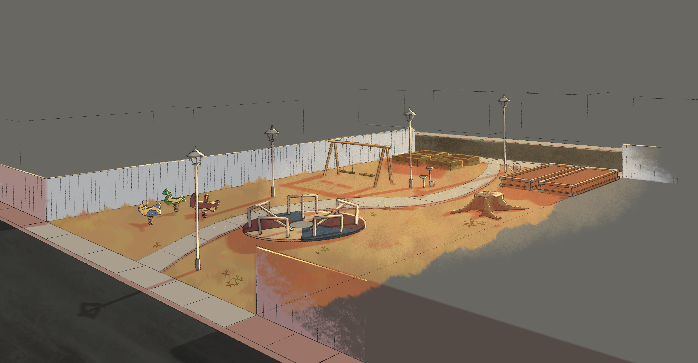
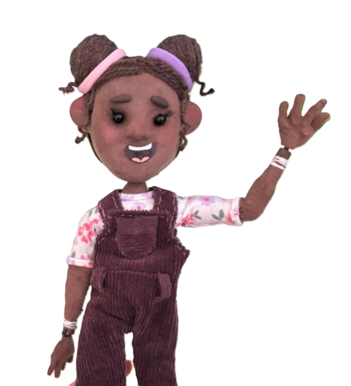
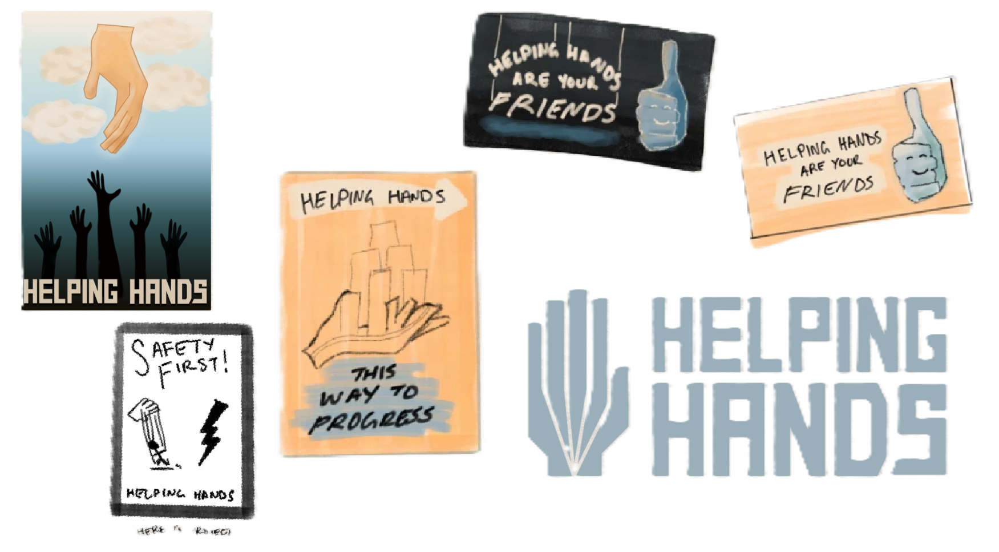
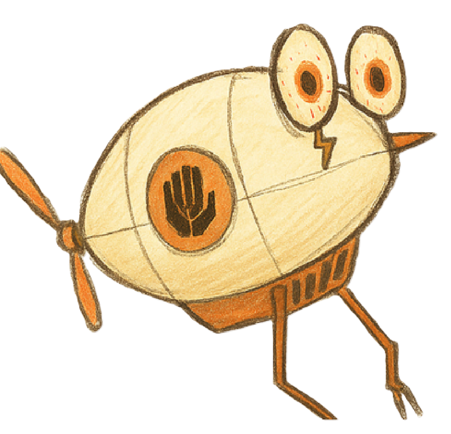
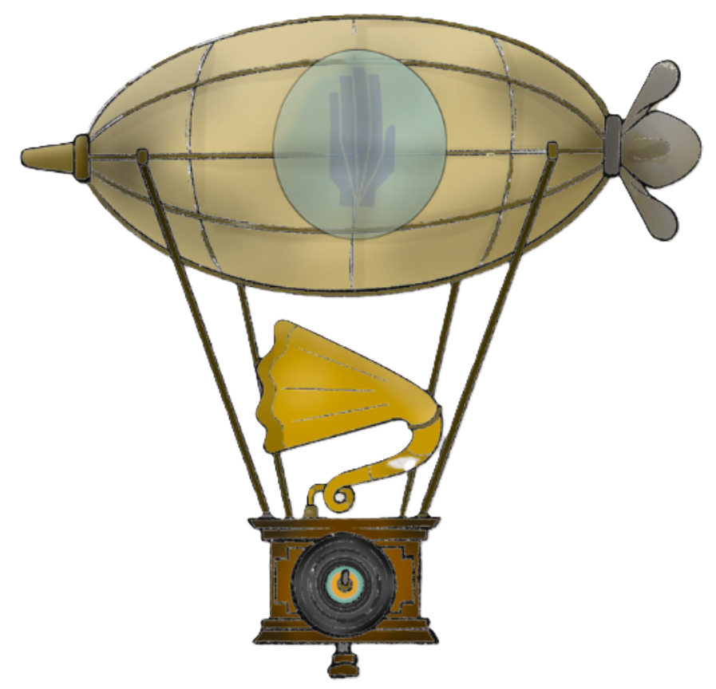
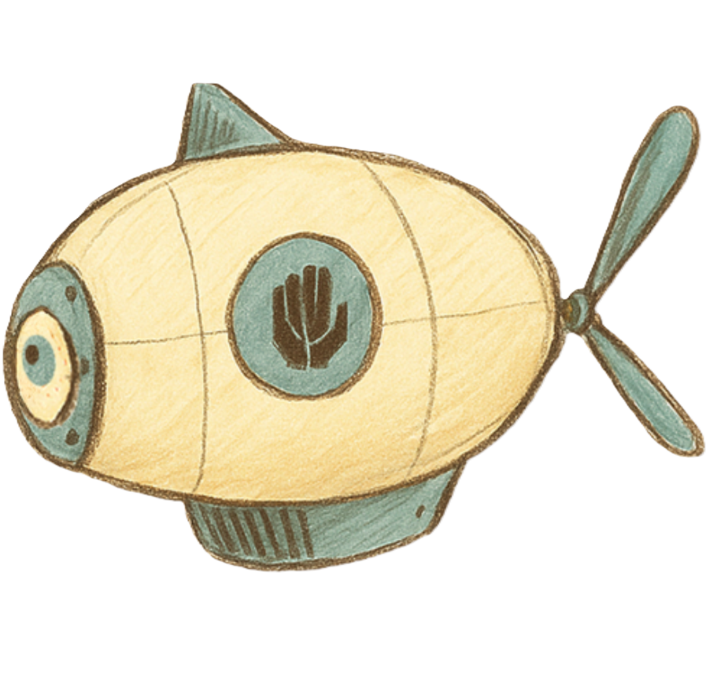

Together with her floral companion and an unexpected friend, she must outrun mechanical nightmares and build back a once-thriving rebellion to sever the world’s ties and discover true freedom.
Writer and Director: Jacob Painter
Producer: Jess Grace Garcia
View full Cast & Crew
It’s as if the 70’s were just getting ready to end when the Hands came in and stuck a 50’s facade over them.

Amara thinks Toby is a scaredy-cat, but as their adventures take them to faraway and scary places, Toby learns to be courageous in the face of evil.

Under the guise of providing uniformity, structure, and purpose, the Hands employ mechanical tyrants and puppet-like control over the Town's citizens to mine resources and exploit the world they've conqured.

The Crank is the voice of the Hands, embodied by a floating 60s record player. He speaks to Amara through the voice of the Mayor.

Told through intricately hand-crafted stop-motion animation and a captivating musical soundtrack, Ties That Bind is an inspiring tale of individualism, community, and the courage it takes to defy a broken system. To save the world, Amara must look past the strings of oppression, embarking on an adventure that will take her to the ends of the Earth and beyond.
The soundtrack is simultaneously intense and orchestral, but also simple and grounded and reflects the style of the animation.
tiesthatbindfeature@gmail.com | copy
Producer - Jess Grace Garcia
443-655-7611
